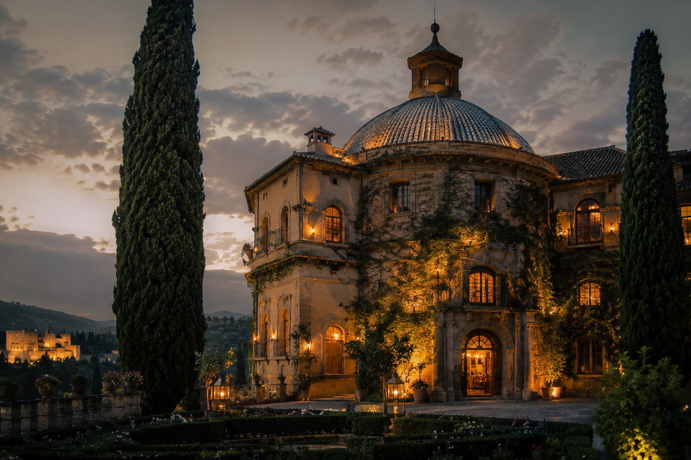
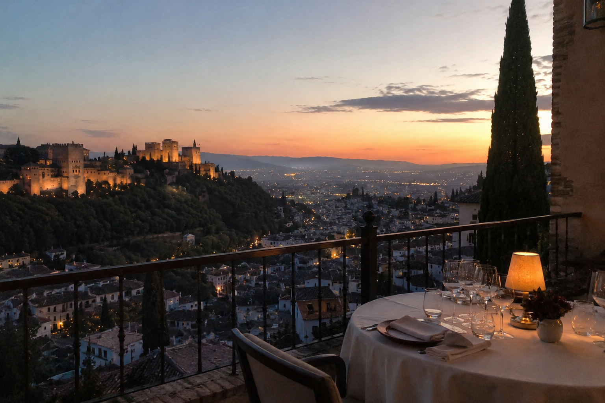
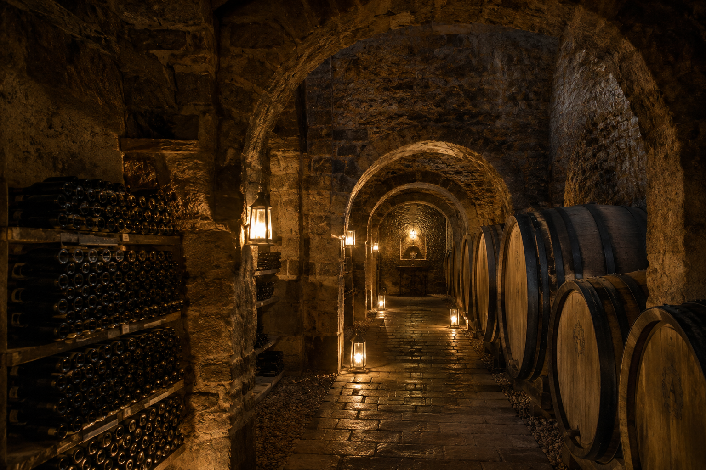

OUR STORY

The Golden Dome
In 1714, after the War of the Spanish Succession, our founder, Don Aleix de Montclar stumbled upon a lost recipe chest that had belonged to a Viennese chef. That unexpected twist of fate drove him to travel across Europe, learning techniques and flavors that bridged opposing cultures. His purpose was born then: to create a place where the table could be a refuge in uncertain times.
In 1718, he found a semi-ruined manor house in Granada, whose intact dome had survived fires and wars for a century. The golden light that fell over the hall convinced him that this place had to be more than a home. There he founded La Cúpula, where tradition and travel intertwined in every dish.

Don Aleix de Montclar
A visionary aristocrat, alchemist of flavors, and tireless culinary explorer, Don Aleix dedicated his later years to transforming hosting into an art form. Born into privilege but driven by an insatiable curiosity, he spent decades mapping the gastronomic secrets of European courts, from Versailles to Vienna, before meticulously adapting them to the raw beauty and vibrant spices of Andalusia.
His philosophy was revolutionary for his time; he viewed the dining table not as a display of power or wealth, but as a sacred space for genuine human connection. He spent years experimenting with local wild herbs, saffron infusions, and custom pomegranate reductions, seamlessly blending Moorish heritage with classical European grand techniques to create a completely unique sensory language in Granada.
More than a chef, he was a true master of atmospheres, personally designing the acoustics of the dome, the precise candlelight placement, and the air flow of the halls. He famously wrote in his personal journal that a true meal does not merely feed the flesh, but provides an eternal, unwavering sanctuary to the wandering soul—a belief that remains the absolute guiding light of our kitchen today.
THE EXPERIENCE

The Panoramic Dome
Dining at La Cúpula is an immersion into the breathtaking beauty of Granada. Our elevated position offers guests unobstructed, panoramic views of the historic Alhambra and the vibrant Plaza Nueva from the comfort of our main hall.
As the evening approaches, the golden sunset bathes the city in a warm glow, seamlessly transitioning into a starlit canopy. This unmatched scenery creates a romantic and serene backdrop, ensuring that your time at the table is accompanied by the true essence and visual splendor of Andalusia.

The Historical Vaults
Beneath the ashlar stones of our dining hall lies a fascinating network of underground galleries dating back to the late 16th century. Originally constructed to withstand times of siege, these catacombs have been carefully preserved.
Rather than dining in the shadows, we invite our guests to step away from the table and uncover this architectural marvel. We offer complimentary guided tours of the vaults before or after your meal. Walk through centuries of history, admire the ancient masonry, and discover the hidden heritage that anchors our magnificent estate.